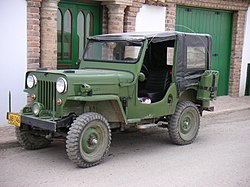

Autos Clásicos
Con carácter general, se considera un automóvil clásico a aquel que tiene al menos 25 años de antigüedad. Desde el punto de vista legal, muchos países disponen de figuras administrativas que permiten declarar un vehículo como automóvil clásico a partir de un determinado número de años desde su primera matriculación, lo que implica un tratamiento fiscal especial y algunas particularidades de carácter técnico. El mínimo de años puede variar de unos países a otros, pero en Europa lo más habitual es que se exijan 30 años.1 El concepto de automóvil clásico es extensible a otros tipos de medios de transporte aptos para circular por carretera, tales como motocicletas, camiones o autobuses entre otros, por lo que habitualmente también se habla de forma genérica de vehículos clásicos, aunque los más populares sean con gran diferencia los automóviles.
jeep willys cj3b
El Willys CJ-3B reemplazó al CJ-3A en 1953, el mismo año en que Kaiser Motors compró Willys-Overland. La empresa matriz de Kaiser eliminó "Overland" del nombre de la subempresa Willys Motors. El CJ-3B introdujo una parrilla y un capó más altos para disponer de espacio para el nuevo motor Willys Hurricane. Una transmisión manual de cuatro velocidades se volvió opcional en 1963, a un costo adicional de 194 dólares.15 El ...
Suzuki LJ80
Una rica cronología de casi 50 años. Así es como se puede definir la historia del Suzuki Jimny, un pequeño campero que con el paso del tiempo se hizo icónico llegando hace poco a cuatro generaciones durante su recorrido comercial. Incluso, tuvo un capítulo importante en nuestra historia automotriz y en la industria del ensamblaje colombiano. Para no extendernos demasiado no se tuvo en cuenta la semblanza de este...

Mercedes-Benz 770
El Mercedes-Benz 770, también conocido como Großer Mercedes (en alemán "Gran Mercedes"), era un automóvil grande de lujo construido por Mercedes-Benz de 1930 a 1943. Es quizá más conocido por las imágenes de archivo de los oficiales del alto mando de la Alemania nazi antes y durante la Segunda Guerra Mundial. Entre sus propietarios destacan Adolf Hitler, Hermann Göring, Heinrich Himmler y Reinhard Heydrich.